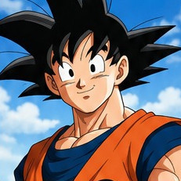

★ Rango Maestro ★Son Goku
Defensor del Planeta & Maestro Front-End
Especialista en arquitectura visual robusta, selectores limpios y layouts con Flexbox y CSS Grid.
Kamehameha
Super Saiyan
Patrones de diseño listos para producción inspirados en la estética y maquetación de Son Goku.
Las barras de progreso son componentes esenciales en dashboards, videojuegos y perfiles curriculares. Este componente combina bordes redondeados tipo píldora, animaciones con gradientes lineales y control de porcentaje dinámico:
<!-- HTML --> <div class="ki-bar-wrapper"> <div class="ki-bar-header"> <span>Nivel de Ki</span> <span>85%</span> </div> <div class="ki-bar-track"> <div class="ki-bar-fill" style="width: 85%;"></div> </div> </div> /* CSS */ .ki-bar-track { width: 100%; height: 22px; background: rgba(0, 0, 0, 0.15); border-radius: var(--radio-pildora); /* 50px */ padding: 3px; overflow: hidden; box-shadow: inset 0 2px 4px rgba(0,0,0,0.3); } .ki-bar-fill { height: 100%; border-radius: var(--radio-pildora); background: linear-gradient(90deg, #fbbf24, #f59e0b, #d97706); transition: width 0.3s cubic-bezier(0.2, 0.8, 0.2, 1); box-shadow: 0 0 15px rgba(245, 158, 11, 0.7); }
Los chips o píldoras (badges interactivos) se emplean para etiquetas, tags de habilidades o filtros. Usan border-radius: var(--radio-pildora) y microinteracciones de elevación al pasar el cursor (hover):
<!-- HTML --> <span class="chip-tecnica ki">⚡ Kamehameha</span> <span class="chip-tecnica saiyan">✨ Kaio-ken</span> <span class="chip-tecnica dios">🔥 Ultra Instinto</span> /* CSS */ .chip-tecnica { display: inline-flex; align-items: center; gap: 8px; padding: 7px 16px; border-radius: var(--radio-pildora); /* 50px */ font-size: 0.86rem; font-weight: 700; border: 1px solid var(--color-borde); background: var(--color-tarjeta-bg); cursor: pointer; transition: all 0.25s cubic-bezier(0.4, 0, 0.2, 1); } .chip-tecnica:hover { transform: translateY(-2px); box-shadow: 0 4px 12px rgba(0, 0, 0, 0.12); }
Crear tablas elegantes con bordes redondeados en CSS requiere envolver la etiqueta <table> en un contenedor exterior con overflow: hidden y border-radius, evitando que el colapso de bordes corte las esquinas:
| Rival / Oponente | Edición / Saga | Técnica Final | Resultado |
|---|---|---|---|
| Jackie Chun | 21.º Torneo Tenkaichi Budokai | Doble Patada Voladora | ✗ Derrota Honorable |
| Piccolo Daimaō | Saga Rey Demonio Piccolo | Golpe del Ozaru Penetrómetro | ✓ Victoria Decisiva |
| Piccolo Jr. | 23.º Torneo Tenkaichi Budokai | Meteoro Gigante de Cabeza | ✓ Campeón del Mundo |
| Vegeta | Saga de los Saiyans | Choque Kaio-ken x4 + Genkidama | ⚡ Empate Estratégico |
| Freezer | Saga del Planeta Namek | Super Saiyan Despertado | ✓ Victoria Histórica |
<!-- Contenedor obligatorio para esquinas redondeadas limpias --> <div class="tabla-torneo-wrap"> <table class="tabla-torneo"> <thead> <tr> <th>Rival</th> <th>Saga</th> <th>Resultado</th> </tr> </thead> <tbody> <tr> <td>Piccolo</td> <td>23.º Torneo</td> <td><span class="victoria">✓ Victoria</span></td> </tr> </tbody> </table> </div> /* CSS */ .tabla-torneo-wrap { border-radius: 12px; overflow: hidden; /* Recorta las esquinas de thead y tbody */ border: 1px solid var(--color-borde); box-shadow: var(--sombra-suave); } .tabla-torneo { width: 100%; border-collapse: collapse; } .victoria { color: var(--color-verde); font-weight: 700; } .derrota { color: var(--color-rojo); font-weight: 700; } .decisivo { color: var(--color-dorado-oscuro); font-weight: 700; }
El patrón maestro de diseño en tarjetas: el contenedor principal tiene position: relative y overflow: hidden, mientras que la medalla o insignia se posiciona con position: absolute; top: 14px; right: 14px;:

★ Rango Maestro ★Defensor del Planeta & Maestro Front-End
Especialista en arquitectura visual robusta, selectores limpios y layouts con Flexbox y CSS Grid.
<!-- HTML --> <article class="card-guerrero"> <div class="card-header-img"> <img src="goku.jpg" alt="Son Goku"> <span class="badge-flotante">★ Rango Maestro ★</span> </div> <div class="card-body"> <h3>Son Goku</h3> <p>Defensor de la Tierra</p> </div> </article> /* CSS: Patrón Maestro Relative + Absolute */ .card-guerrero { position: relative; border-radius: 14px; overflow: hidden; box-shadow: 0 4px 15px rgba(0, 0, 0, 0.1); background: white; } .card-header-img { position: relative; height: 180px; } .badge-flotante { position: absolute; top: 14px; right: 14px; background: #f59e0b; color: #451a03; padding: 5px 12px; border-radius: 50px; font-size: 0.76rem; font-weight: 800; box-shadow: 0 4px 10px rgba(0, 0, 0, 0.25); }
Un header de navegación profesional que distribuye el logotipo, los enlaces centrales y el botón de acción en los extremos opuestos con display: flex; justify-content: space-between; align-items: center;:
<!-- HTML --> <nav class="navbar"> <div class="navbar-brand">🥋 Capsule Corp</div> <ul class="navbar-links"> <li><a href="#">Inicio</a></li> <li><a href="#">Técnicas</a></li> <li><a href="#">Torneos</a></li> </ul> <button class="navbar-cta">Entrenar ⚡</button> </nav> /* CSS */ .navbar { display: flex; justify-content: space-between; align-items: center; padding: 14px 24px; background: white; border-radius: 12px; box-shadow: 0 4px 15px rgba(0, 0, 0, 0.08); } .navbar-links { display: flex; gap: 20px; list-style: none; } @media (max-width: 768px) { .navbar { flex-direction: column; gap: 15px; } }